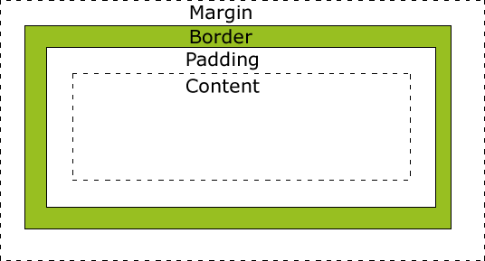

目录
现在的互联网前端分三层：
CSS：Cascading Style Sheet，层叠样式表。CSS的作用就是给HTML页面标签添加各种样式，定义网页的显示效果。简单一句话：CSS将网页内容和显示样式进行分离，提高了显示功能。
HTML的缺陷：
1.不能够适应多种设备
2.要求浏览器必须智能化足够庞大
3.数据和显示没有分开
4.功能不够强大
CSS 优点：
1.使数据和显示分开
2.降低网络流量
3.使整个网站视觉效果一致
4.使开发效率提高了（耦合性降低，一个人负责写html，一个人负责写css）
比如说，有一个样式需要在一百个页面上显示，如果是html来实现，那要写一百遍，现在有了css，只要写一遍。现在，html只提供数据和一些控件，完全交给css提供各种各样的样式。
<div>
<p style="color: green">我是一个段落</p>
</div><style type="text/css">
/*写我们的css代码*/
span{
color: yellow;
}
</style><link rel="stylesheet" href="./index.css"><style type="text/css">
@import url('./index.css');
</style> 标签选择器可以选中所有的标签元素，比如div，ul，li ，p等等，不管标签藏的多深，都能选中，选中的是所有的，而不是某一个，所以说 "共性" 而不是 ”特性“
body{
color:gray;
font-size: 12px;
}
/*标签选择器*/
p{
color: red;
font-size: 20px;
}
span{
color: yellow;
}所谓类：就是class . class与id非常相似 任何的标签都可以加类，但是类是可以重复,属于归类的概念。同一个标签中可以携带多个类，用空格隔开
类的使用，能够决定前端工程师的css水平到底有多牛逼？在这里一定要有”公共类“的概念。
.lv{
color: green;
}
.big{
font-size: 40px;
}
.line{
text-decoration: underline;
}<!-- 公共类 共有的属性 -->
<div>
<p class="lv big">段落1</p>
<p class="lv line">段落2</p>
<p class="line big">段落3</p>
</div>同一个页面中id不能重复。
任何的标签都可以设置id ，id命名规范 要以字母 可以有数字 下划线 - 大小写严格区分 aa和AA是两个不一样的属性值
#box{
background:green;
}
#s1{
color: red;
}
#s2{
font-size: 30px;
}<body>
<div id="box">娃哈哈</div>
<div id="s1">爽歪歪</div>
<div id="s2">QQ星</div>
</body>使用 空格 表示后代选择器。顾名思义，父元素的后代（包括儿子，孙子，重孙子）
.container p{
color: red;
}
.container .item p{
color: yellow;
}使用 > 表示子代选择器。比如div>p,仅仅表示的是当前div元素选中的子代(不包含孙子....)元素p。
.container>p{
color: yellowgreen;
}.c1+p{
color:green;
}
找的是紧挨着class属性为c1的标签的下面的标签
示例:同上.c1~p{
color: green;
}通过标签属性来找到对应的标签
通过属性来找写法:
[xxx]{color: red;} 找到有xxx属性的所有标签
[xxx="p2"]{color:red;} 找到有xx属性的并且属性值为p2的所有标签
p[title]{xx: xx;} 找到所有有title属性的p标签
p[title="p2"]{xx: xx} 找到所有有title属性的并且属性值为p2的p标签
<!DOCTYPE html>
<html lang="en">
<head>
<meta charset="UTF-8">
<title>Title</title>
<style>
p[xxx='p2']{
color:red;
}
</style>
</head>
<body>
<p>p1</p>
<p xxx="p2">p2</p>
<p xxx="p3">p3</p>
</body>
</html>多个选择器之间使用 逗号 隔开。表示选中的页面中的多个标签。一些共性的元素，可以使用并集选择器
/*并集选择器*/
h3,a{
color: #008000;
text-decoration: none;
}body,h1,h2,h3,h4,h5,h6,hr,p,blockquote,dl,dt,dd,ul,ol,li,pre,form,fieldset,legend,button,input,textarea,th,td,a {
margin: 0;
padding: 0
}
/*使用此并集选择器选中页面中所有的标签，页面布局的时候会使用*/使用 . 表示交集选择器。第一个标签必须是标签选择器，第二个标签必须是类选择器 语法：div.active
比如有一个
这样的标签。那么它表示两者选中之后元素共有的特性。h4{
width: 100px;
font-size: 14px;
}
.active{
color: red;
text-decoration: underline;
}
/* 交集选择器 */
h4.active{
background: #00BFFF;
}伪类选择器一般会用在超链接a标签中，使用a标签的伪类选择器，我们一定要遵循"爱恨准则"
/*link表示没有被访问的a标签的样式*/
a:link{
color: #666;
}
/*visited表示访问过后的a标签的样式*/
a:visited{
color: yellow;
}
/*hover表示鼠标悬停时a标签的样式*/
a:hover{
color: green;
}
/*active表示鼠标摁住的时候a标签的样式*/
a:active{
color: yellowgreen;
}/*设置第一个首字母的样式*/
p:first-letter{
color: red;
font-size: 30px;
}
/* 在....之前 添加内容 这个属性使用不是很频繁 了解 使用此伪元素选择器一定要结合content属性*/
p:before{
content:'alex';
}
/*在....之后 添加内容，使用非常频繁 通常与咱们后面要讲到布局 有很大的关联（清除浮动）*/
p:after{
content:'&';
color: red;
font-size: 40px;
}属性选择器，字面意思就是根据标签中的属性，选中当前的标签。
/*根据for属性查找，找到所有又for属性的，设置字体颜色为红色*/
/*[for]{
color: red;
}*/
/*找到for属性的值等于username的元素 字体颜色设为黄色*/
/*[for='username']{
color: yellow;
}*/
/*以....开头 ^*/
/*[for^='user']{
color: #008000;
}*/
/*以....结尾 $*/
/*[for$='vvip']{
color: red;
}*/
/*包含某元素的标签*/
/*[for*="vip"]{
color: #00BFFF;
}*/
/*指定标签的for属性
其中for属性的值是以空格隔开的值列表，
user1是值列表中的一个独立值*/
label[for~='user1']{
color: red;
}
input[type='text']{
background: red;
}有些时候我们可能会给同一个标签设置多个样式，遇到了重叠项的设置又该听谁的呢？这里就要用到选择器的权重。
行内样式 1000> id选择器 100 > 类选择器 10 > 标签选择器 1 > 继承样式 0
继承性：给父级设置一些属性，子级继承了父级的该属性，这就是我们的css中的继承。
面向对象语言都会存在继承的概念，在面向对象语言中，继承的特点：继承了父类的属性和方法。那么我们现在主要研究css，css就是在设置属性的。不会牵扯到方法的层面。
记住：有一些属性是可以继承下来 ： color 、 font-*、 text-*、line-* 。主要是文本级的标签元素。
但是像一些盒子元素属性，定位的元素（浮动，绝对定位，固定定位）不能继承。继承规则
层叠性：权重大的标签覆盖掉了权重小的标签，谁的权重大，浏览器就会显示谁的属性
width宽度
height高度
块级标签能设置高度宽度,内联标签不能设置高度宽度,内敛标签的高度宽度由标签内部的内容来决定.
示例
<!DOCTYPE html>
<html lang="en">
<head>
<meta charset="UTF-8">
<title>Title</title>
<style>
div{
height: 100px;
width: 200px;
background-color: purple;
}
span{
height: 100px;
width: 200px;
background-color: yellow;
}
</style>
</head>
<body>
<div>div1</div>
<span>span1</span>
</body>
</html>字重设置的值
font-weight用来设置字体的字重（粗细）。
| 值 | 描述 |
|---|---|
| normal | 默认值，标准粗细 |
| bold | 粗体 |
| bolder | 更粗 |
| lighter | 更细 |
| 100~900 | 设置具体粗细，400等同于normal，而700等同于bold |
| inherit | 继承父元素字体的粗细值 |
字体
font-family:'宋体','楷体'...
字体大小
font-family: '楷体','黑体'; /* 字体,从左往右找浏览器能够支持的字体 */
font-size: 10px; /* 设置字体大小,默认字体大小是16px */
字重
font-weight:bold;加粗
字体颜色
/*color:red;*/
/*color: #668B8B; */
/*color: rgb(255, 170, 205);*/
/*color: rgba(255, 255, 100, 0.5) 设置透明度*/text-align 文字的水平对齐
left 左对齐
center 居中
reght 右对齐
text-decoration 文本装饰
none; 没有下划线
line-through; 中划线
overline; 上划线
underline; 下划线
text-indent 文本缩进
text-indent: 2em; em单位是一个相对单位,相对当前字体大小的像素是1em
line-height 行高,设置行高=容器高度,文字自动垂直居中
line-height: 200px;
color:设置字体颜色background-color: red; 在没有背景图片覆盖的范围显示背景颜色
background-image: url('timg.jpg'); 设置背景图片
height: 400px;
width: 400px;
background-repeat: no-repeat; 设置图片不重复 repeat-x水平重复 repeat-y垂直重复
background-position: right top; 图片的位置 左中右x 上中下y
/*left center right /top center bottom*/
background-attachment: fixed; 在窗口中固定图片的位置
background:red url("timg.jpg") no-repeat left center; 把所有的设置综合写在background中边框样式的值
| 值 | 描述 |
|---|---|
| none | 无边框。 |
| dotted | 点状虚线边框。 |
| dashed | 矩形虚线边框。 |
| solid | 实线边框。 |
width: 100px;
height: 100px;
/*border-color: tomato green gray yellow;*/
/*border-width: 1px 3px 5px 7px;*/
/*border-style: solid dotted dashed double;*/
/*一个值:上下左右
四个值:遵循顺时针上右下左
三个值:上 右左 下
两个值:遵循上下 左右
*/
/*border-top-style:solid ;*/ 单独设置顶线的样式(left,bottom,right)
/*border-left-style:solid ;*/ 单独设置左边线的样式
/*border-top-color:red;*/ 单独设置顶线颜色
border:yellow solid 10px; 统一设置边框的颜色 样式 宽度对于行内标签来说不能设置宽和高
有些时候需要行内标签也设置宽和高,需要进行行内-->块,行内->行内块
display的属性值 : block块 inline行内 inline-block行内快 none
display: block; 独占一行并且可以设置宽高
display: inline-block; 既可以设置宽高又不会独占一行 行内\块转行内快
display: inline; 表示一个行内元素,不能设置宽高
display: none; 不仅不显示内容,连位置也不占了在CSS中，"box model"这一术语是用来设计和布局时使用，然后在网页中基本上都会显示一些方方正正的盒子。我们称为这种盒子叫盒模型。
盒模型有两种：标准模型和IE模型。我们在这里重点讲标准模型。
盒模型示意图

width：内容的宽度
height: 内容的高度
padding：内边距，边框到内容的距离，padding的区域是有背景颜色的。并且背景颜色和内容的颜色一样。也就是说background-color这个属性将填充所有的border以内的区域
border: 边框，就是指的盒子的宽度
margin：外边距，盒子边框到附近最近盒子的距离如果让你做一个宽高402*402的盒子，您如何来设计呢？答案有上万种，甚至上亿种。
盒模型的计算 ：width/height+2padding+2border
如果一个盒子设置了padding，border，width，height
盒子的真实宽度 = width+2*padding+2*border
盒子的真实高度 = height+2*padding+2*borderwidth不等于盒子的真实宽度
如果要保持盒子真实的宽度，那么加padding就一定要减width，减padding就一定要加width。
padding有四个方向，分别描述4个方向的padding。描述的方法有两种：
padding-top: 30px;
padding-right: 30px;
padding-bottom: 30px;
padding-left: 30px;1.写小属性,分别设置不同方向的padding
/*上 右 下 左*/
padding: 20px 30px 40px 50px ;
/*上 左右 下*/
padding: 20px 30px 40px;
/* 上下 左右*/
padding: 20px 30px;
/*上下左右*/
padding: 20px;border:边框的意思，描述盒子的边框
边框有三个要素： 粗细 线性样式 颜色（如不写颜色默认为黑色。如不写粗细不显示边框。只写线性样式，默认有上下左右 3px宽度的实体黑色边框。）
border-width: 3px;
border-style: solid;
border-color: red;
/*
border-width: 5px 10px;
border-style: solid dotted double dashed;
border-color: red green yellow;
*/
/*设置顺序 ：上 右 左 下*/
/*border-style: 实线，点状，双线，虚线*/按照三要素来写border
border-top-width: 10px;
border-top-color: red;
border-top-style: solid;
border-right-width: 10px;
border-right-color: red;
border-right-style: solid;
border-bottom-width: 10px;
border-bottom-color: red;
border-bottom-style: solid;
border-left-width: 10px;
border-left-color: red;
border-left-style:solid;border-top: 10px solid red;
border-right: 10px solid red;
border-bottom: 10px solid red;
border-left: 10pxb solid red;border-radius属性
利用border画三角
<!DOCTYPE html>
<html lang="en">
<head>
<meta charset="UTF-8">
<title>Title</title>
<style>
div{
width: 0px;
height: 0px;
border-style: solid;
border-width: 20px;
border-color: #7ef0c2 transparent transparent transparent;
}
</style>
</head>
<body>
<div class="triangle"></div>
</body>
</html>margin：外边距的意思。表示边框到最近盒子的距离。
/*表示四个方向的外边距离为20px*/
margin: 20px;
/*表示盒子向下移动了30px*/
margin-top: 30px;
/*表示盒子向右移动了50px*/
margin-left: 50px;
/*表示盒子距离右面的盒子100px*/
margin-right: 100px;
/*表示盒子距离下面的盒子100px*/
margin-bottom: 100px;设置margin
html:
<div class="father">
<div class="box1"></div>
<div class="box2"></div>
</div>
css:
*{
padding: 0;
margin: 0;
}
.father{
width: 400px;
border: 1px solid gray;
/*float: left;*/
}
.box1{
width: 300px;
height: 200px;
background-color: red;
margin-bottom: 20px;
/*float: left;*/
}
.box2{
width: 400px;
height: 300px;
background-color: green;
margin-top: 50px;
/*float: left;*/
}
/*
当给两个标准流下兄弟盒子 设置垂直方向上的margin时，那么以较大的为准，那么我们称这种现象叫塌陷。没法解决，我们称为这种技巧叫“奇淫技巧”。记住这种现象，在布局垂直方向盒子的时候注意margin的用法。
当我们给两个标准流下的兄弟盒子设置浮动之后，就不会出现margin塌陷的问题。
*/margin的塌陷
div{
width: 780px;
height: 50px;
background-color: red;
/*水平居中盒子*/
margin: 0px auto;
/*水平居中文字*/
text-align: center;
}
/*当一个div元素设置margin：0 auto;时就会居中盒子，那我们知道margin:0 auto;表示上下外边距离为0，左右为auto的距离，那么auto是什么意思呢？
设置margin-left:auto；我们发现盒子尽可能远离左侧，当设置margin-right:auto；我们发现盒子尽可能远离右侧。当两条语句并存的时候，我们发现盒子尽可能远离两侧，此时盒子就居中了。
如果给盒子设置浮动，那么margin:0 auto失效。
使用margin：0 auto;注意点：
1.使用margin: 0 auto;水平居中盒子必须有width，要有明确width，文字水平居中使用text-align: center;
2.只有标准流下的盒子 才能使用margin:0 auto;
当一个盒子浮动了，固定定位，绝对定位(后面会讲)，margin:0 auto; 不能用了
3.margin：0 auto;居中盒子。而不是居中文本，文字水平居中使用text-align: center;
*/浮动是css里面布局最多的一个属性，也是很重要的一个属性。
float：表示浮动的意思。它有四个值
清除浮动(解决塌陷问题)
clear: both; /* clear清除浮动 */ left\right
方式1:
1.父级标签设置高度
2.通过伪元素选择器来进行清楚浮动:写法如下
.clearfix:after{
content:'';
display: block;
clear: both;
}
示例:
<!DOCTYPE html>
<html lang="en">
<head>
<meta charset="UTF-8">
<title>Title</title>
<style>
.c1{
width: 100px;
height: 100px;
background-color: red;
float: left;
}
.c2{
width: 100px;
height: 100px;
background-color: green;
float: right;
}
.c3{
/*width: 100px;*/
height: 100px;
background-color: pink;
/*clear: both; !* clear清除浮动 *!*/
}
.clearfix:after{
content:'';
display: block;
clear: both;
}
/* 浮动,会造成父级标签塌陷问题 */
/* 解决父级标签塌陷问题方式1 */
/*.cc{*/
/* height: 100px;*/
/*}*/
</style>
</head>
<body>
<!--ajsdfja;sdjfo;asjdfo-->
<div class="cc clearfix">
<div class="c1">div1</div>
<div class="c2">div2</div>
</div>
<div class="c3">div3</div>
</body>
</html>clear清楚浮动
clear属性规定元素的哪一侧不允许其他浮动元素。
| 值 | 描述 |
|---|---|
| left | 在左侧不允许浮动元素。 |
| right | 在右侧不允许浮动元素。 |
| both | 在左右两侧均不允许浮动元素。 |
| none | 默认值。允许浮动元素出现在两侧。 |
| inherit | 规定应该从父元素继承 clear 属性的值。 |
overflow溢出
| 值 | 描述 |
|---|---|
| visible | 默认值。内容不会被修剪，会呈现在元素框之外。 |
| hidden | 内容会被修剪，并且其余内容是不可见的。 |
| scroll | 内容会被修剪，但是浏览器会显示滚动条以便查看其余的内容。 |
| auto | 如果内容被修剪，则浏览器会显示滚动条以便查看其余的内容。 |
| inherit | 规定应该从父元素继承 overflow 属性的值。 |
定位有三种：相对定位、绝对定位、固定定位
position : relative /absolute /fixed
top:10px;
right:10px;
bottom:10px;
left:10px;
相对定位 :相对自己原来的位置移动,移动之后还占据原来的位置
绝对定位 :绝对定位是相对于整个html页面,不会占据原来的位置,层级的提升
如果我们设置了绝对定位的元素 的父元素 没有设置position,那么我们对元素的所有设置都是基于整个页面
如果设置了position,那么子盒子的absolute位置会根据父盒子的位置定位
父相子绝:子元素设置的绝对位置会对应着祖级元素的相对位置
固定定位 :固定是相对于整个窗口的指的就是各个盒子重叠在一起谁上谁下的问题。
四大特性，只要你记住了，页面布局就不会出现找不到盒子的情况。
- z-index 值表示谁压着谁，数值大的压盖住数值小的，
- 只有定位了的元素，才能有z-index,也就是说，不管相对定位，绝对定位，固定定位，都可以使用z-index，而浮动元素不能使用z-index
- z-index值没有单位，就是一个正整数，默认的z-index值为0如果大家都没有z-index值，或者z-index值一样，那么谁写在HTML后面，谁在上面压着别人，定位了元素，永远压住没有定位的元素。
- 从父现象：父亲怂了，儿子再牛逼也没用opacity: 0.5;调整d4对应的整个标签的透明度是50%
.d4{
opacity: 0.5;
}
<div class="d4">
你好你好娃哈哈
<img src="timg.jpg" alt="">
</div>